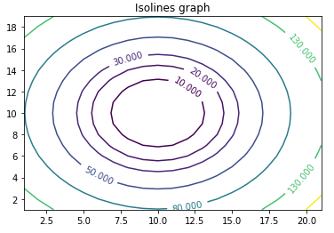
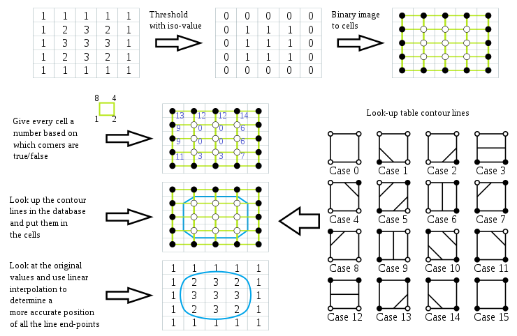
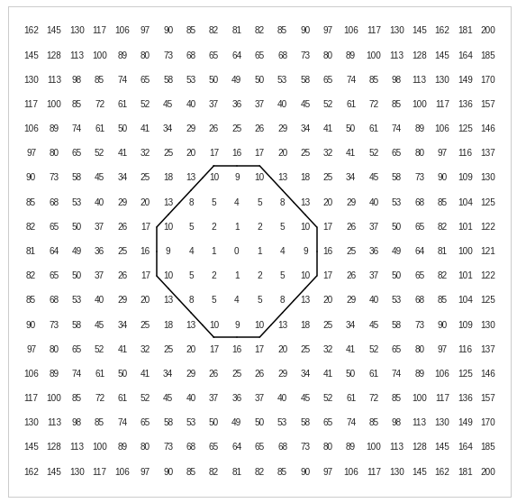

March 21, 2021
Isolines are lines on a map (or graph) connecting datapoints of the same value. Isolines are often used in Geography for studying patterns of temperature, height, rain, etc.
Suppose that a client's marketing department wants you to plot an isoline graph in order to identify customers with the same budget capabilities. The dataset is normalized to 200 and is shown below:
19x21 matrix:
[[162,145,130,117,106,97,90,85,82,81,82,85,90,97,106,117,130,145,162,181,200],
[145,128,113,100,89,80,73,68,65,64,65,68,73,80,89,100,113,128,145,164,185],
[130,113,98,85,74,65,58,53,50,49,50,53,58,65,74,85,98,113,130,149,170],
[117,100,85,72,61,52,45,40,37,36,37,40,45,52,61,72,85,100,117,136,157],
[106,89,74,61,50,41,34,29,26,25,26,29,34,41,50,61,74,89,106,125,146],
[97,80,65,52,41,32,25,20,17,16,17,20,25,32,41,52,65,80,97,116,137],
[90,73,58,45,34,25,18,13,10,9,10,13,18,25,34,45,58,73,90,109,130],
[85,68,53,40,29,20,13,8,5,4,5,8,13,20,29,40,53,68,85,104,125],
[82,65,50,37,26,17,10,5,2,1,2,5,10,17,26,37,50,65,82,101,122],
[81,64,49,36,25,16,9,4,1,0,1,4,9,16,25,36,49,64,81,100,121],
[82,65,50,37,26,17,10,5,2,1,2,5,10,17,26,37,50,65,82,101,122],
[85,68,53,40,29,20,13,8,5,4,5,8,13,20,29,40,53,68,85,104,125],
[90,73,58,45,34,25,18,13,10,9,10,13,18,25,34,45,58,73,90,109,130],
[97,80,65,52,41,32,25,20,17,16,17,20,25,32,41,52,65,80,97,116,137],
[106,89,74,61,50,41,34,29,26,25,26,29,34,41,50,61,74,89,106,125,146],
[117,100,85,72,61,52,45,40,37,36,37,40,45,52,61,72,85,100,117,136,157],
[130,113,98,85,74,65,58,53,50,49,50,53,58,65,74,85,98,113,130,149,170],
[145,128,113,100,89,80,73,68,65,64,65,68,73,80,89,100,113,128,145,164,185],
[162,145,130,117,106,97,90,85,82,81,82,85,90,97,106,117,130,145,162,181,200]]
We want to plot the isoline for the isovalue of 11.
Before building the algorithm from scratch, let's use matplotlib's countour function to see what we are looking at:

import matplotlib
import numpy as np
import matplotlib.cm as cm
import matplotlib.pyplot as plt
x = np.arange(1, 22, 1)
y = np.arange(1, 20, 1)
X, Y = np.meshgrid(x, y)
Z = [[162,145,130,117,106,97,90,85,82,81,82,85,90,97,106,117,130,145,162,181,200],
[145,128,113,100,89,80,73,68,65,64,65,68,73,80,89,100,113,128,145,164,185],
[130,113,98,85,74,65,58,53,50,49,50,53,58,65,74,85,98,113,130,149,170],
[117,100,85,72,61,52,45,40,37,36,37,40,45,52,61,72,85,100,117,136,157],
[106,89,74,61,50,41,34,29,26,25,26,29,34,41,50,61,74,89,106,125,146],
[97,80,65,52,41,32,25,20,17,16,17,20,25,32,41,52,65,80,97,116,137],
[90,73,58,45,34,25,18,13,10,9,10,13,18,25,34,45,58,73,90,109,130],
[85,68,53,40,29,20,13,8,5,4,5,8,13,20,29,40,53,68,85,104,125],
[82,65,50,37,26,17,10,5,2,1,2,5,10,17,26,37,50,65,82,101,122],
[81,64,49,36,25,16,9,4,1,0,1,4,9,16,25,36,49,64,81,100,121],
[82,65,50,37,26,17,10,5,2,1,2,5,10,17,26,37,50,65,82,101,122],
[85,68,53,40,29,20,13,8,5,4,5,8,13,20,29,40,53,68,85,104,125],
[90,73,58,45,34,25,18,13,10,9,10,13,18,25,34,45,58,73,90,109,130],
[97,80,65,52,41,32,25,20,17,16,17,20,25,32,41,52,65,80,97,116,137],
[106,89,74,61,50,41,34,29,26,25,26,29,34,41,50,61,74,89,106,125,146],
[117,100,85,72,61,52,45,40,37,36,37,40,45,52,61,72,85,100,117,136,157],
[130,113,98,85,74,65,58,53,50,49,50,53,58,65,74,85,98,113,130,149,170],
[145,128,113,100,89,80,73,68,65,64,65,68,73,80,89,100,113,128,145,164,185],
[162,145,130,117,106,97,90,85,82,81,82,85,90,97,106,117,130,145,162,181,200]]
fig, ax = plt.subplots()
CS = ax.contour(X, Y, Z, levels=[10, 20, 30, 50, 80, 130, 180])
ax.clabel(CS, inline=True, fontsize=10)
ax.set_title('Isolines graph')
"Marching squares" is an algorithm that efficiently helps us to build isolines. The algorithm is better explained via the image below (courtesy of wikipedia):

The threshold matrix is created by going over the original matrix and substituting the original values by:
For the isovalue of 11, we then have the following threshold matrix:
[[1, 1, 1, 1, 1, 1, 1, 1, 1, 1, 1, 1, 1, 1, 1, 1, 1, 1, 1, 1, 1],
[1, 1, 1, 1, 1, 1, 1, 1, 1, 1, 1, 1, 1, 1, 1, 1, 1, 1, 1, 1, 1],
[1, 1, 1, 1, 1, 1, 1, 1, 1, 1, 1, 1, 1, 1, 1, 1, 1, 1, 1, 1, 1],
[1, 1, 1, 1, 1, 1, 1, 1, 1, 1, 1, 1, 1, 1, 1, 1, 1, 1, 1, 1, 1],
[1, 1, 1, 1, 1, 1, 1, 1, 1, 1, 1, 1, 1, 1, 1, 1, 1, 1, 1, 1, 1],
[1, 1, 1, 1, 1, 1, 1, 1, 1, 1, 1, 1, 1, 1, 1, 1, 1, 1, 1, 1, 1],
[1, 1, 1, 1, 1, 1, 1, 1, 0, 0, 0, 1, 1, 1, 1, 1, 1, 1, 1, 1, 1],
[1, 1, 1, 1, 1, 1, 1, 0, 0, 0, 0, 0, 1, 1, 1, 1, 1, 1, 1, 1, 1],
[1, 1, 1, 1, 1, 1, 0, 0, 0, 0, 0, 0, 0, 1, 1, 1, 1, 1, 1, 1, 1],
[1, 1, 1, 1, 1, 1, 0, 0, 0, 0, 0, 0, 0, 1, 1, 1, 1, 1, 1, 1, 1],
[1, 1, 1, 1, 1, 1, 0, 0, 0, 0, 0, 0, 0, 1, 1, 1, 1, 1, 1, 1, 1],
[1, 1, 1, 1, 1, 1, 1, 0, 0, 0, 0, 0, 1, 1, 1, 1, 1, 1, 1, 1, 1],
[1, 1, 1, 1, 1, 1, 1, 1, 0, 0, 0, 1, 1, 1, 1, 1, 1, 1, 1, 1, 1],
[1, 1, 1, 1, 1, 1, 1, 1, 1, 1, 1, 1, 1, 1, 1, 1, 1, 1, 1, 1, 1],
[1, 1, 1, 1, 1, 1, 1, 1, 1, 1, 1, 1, 1, 1, 1, 1, 1, 1, 1, 1, 1],
[1, 1, 1, 1, 1, 1, 1, 1, 1, 1, 1, 1, 1, 1, 1, 1, 1, 1, 1, 1, 1],
[1, 1, 1, 1, 1, 1, 1, 1, 1, 1, 1, 1, 1, 1, 1, 1, 1, 1, 1, 1, 1],
[1, 1, 1, 1, 1, 1, 1, 1, 1, 1, 1, 1, 1, 1, 1, 1, 1, 1, 1, 1, 1],
[1, 1, 1, 1, 1, 1, 1, 1, 1, 1, 1, 1, 1, 1, 1, 1, 1, 1, 1, 1, 1]]
The above already give us a clue about where the isolines will be drawn. Check the location where we have groups of zeros.
The threshold matrix can be mapped into squares, where each data value is the vertex of a square. These corners can either be true or false. This gives us the following amount of combinations:
(true or false) * (true or false) * (true or false) * (true or false) = 2 * 2 * 2 * 2 = 16
We can then proceed with the following mapping of cases:
An example of Python algorithm to rewrite the threshold matrix into the cases matrix:
case_0 = [[1,1],[1,1]]
case_1 = [[1,1],[0,1]]
case_2 = [[1,1],[1,0]]
case_3 = [[1,1],[0,0]]
case_4 = [[1,0],[1,1]]
case_5 = [[1,0],[0,1]]
case_6 = [[1,0],[1,0]]
case_7 = [[1,0],[0,0]]
case_8 = [[0,1],[1,1]]
case_9 = [[0,1],[0,1]]
case_10 = [[0,1],[1,0]]
case_11 = [[0,1],[0,0]]
case_12 = [[0,0],[1,1]]
case_13 = [[0,0],[0,1]]
case_14 = [[0,0],[1,0]]
case_15 = [[0,0], [0,0]]
cases = [
case_0, case_1, case_2, case_3,
case_4, case_5, case_6, case_7,
case_8, case_9, case_10, case_11,
case_12, case_13, case_14, case_15
]
cases_mapper = {str(case): i for i, case in enumerate(cases)}
def get_corners_matrix(row, column):
"""
Get the corners matrix:
[[top_left, top_right], [bottom_left, bottom_right]]
where top_left is the position of the entry itself.
"""
return [
[
threshold_matrix[row][column],
threshold_matrix[row][column + 1],
],
[
threshold_matrix[row + 1][column],
threshold_matrix[row + 1][column + 1],
]
]
mapped_matrix = []
for row in range(len(threshold_matrix) - 1):
mapped_row = []
for column in range(len(threshold_matrix[0]) - 1):
corners_matrix = get_corners_matrix(row, column)
mapped_row.append(cases_mapper[str(corners_matrix)])
mapped_matrix.append(mapped_row)
Note: The mapped matrix has the dimension M-1,N-1 since the last row and the last column aren't mapped.

x_threshold = 21
y_threshold = 19
# graph configuration
plt.style.use('seaborn-whitegrid')
plt.grid(b=None)
plt.xticks([])
plt.yticks([])
plt.xlim([-1,x_threshold])
plt.ylim([-1,y_threshold])
def plot_line(x,y,case):
middle_y_left = [x, (y_threshold -1) - y - 0.5]
middle_y_right = [x + 1, (y_threshold -1) - y - 0.5]
middle_x_top = [x + 0.5, (y_threshold -1) - y]
middle_x_bottom = [x + 0.5, (y_threshold -1) - y - 1]
if case in [1, 14]:
from_point = middle_y_left
to_point = middle_x_bottom
elif case in [2, 13]:
from_point = middle_x_bottom
to_point = middle_y_right
elif case in [3, 12]:
from_point = middle_y_left
to_point = middle_y_right
elif case in [4, 11]:
from_point = middle_x_top
to_point = middle_y_right
elif case == 5:
# case 5 is a composition of case 2 + case 7
plot_line(x, y, case=2)
plot_line(x, y, case=7)
return
elif case in [6, 9]:
from_point = middle_x_top
to_point = middle_x_bottom
elif case in [7,8]:
from_point = middle_y_left
to_point = middle_x_top
else:
# Never draw for case 0 or 15
return
x = [from_point[0],to_point[0]]
y = [from_point[1],to_point[1]]
plt.plot(x, y, color='black')
for r_index, row in enumerate(mapped_matrix):
for c_index, column in enumerate(row):
plot_line(x=c_index, y=r_index, case=column)
for r_index, row in enumerate(Z):
for c_index, column in enumerate(row):
label = str(column)
plt.annotate(
label,
(c_index,r_index),
ha='center',
va='center',
)
This is the last step to get our final isoline. It is also the most complex one to code. I'll update this in the future if I ever get the patience! (sorry, but let me know if you want this to happen by flicking me an email). Step 3 should give you a good approximation nonetheless.